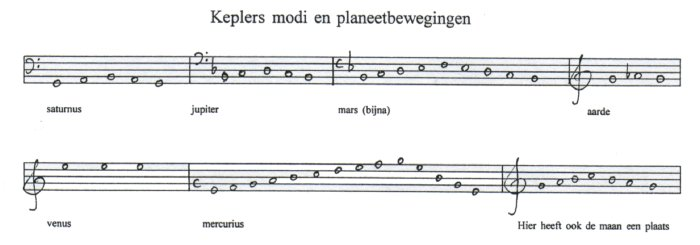
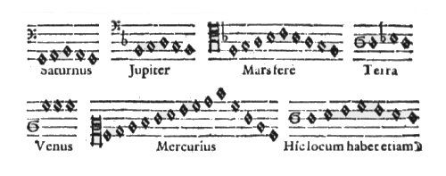

Inhoudsopgave
De toongeslachten Inhoudsopgave
De toongeslachten  De
meerstemmigheid De
meerstemmigheid
De modi
In het zesde hoofdstuk behandelt Kepler de bewegingen van de
afzonderlijke planeten, zo kan het interval tussen aphelium en perihelium van
een zekere planeet met een bepaalde modus verbonden worden.
Kepler gebruikt
de intervallen uit de rechterkolom van tabel 1, saturnus bijvoorbeeld heeft de
ambitus van een grote terts, en mercurius de ambitus van een undecime; deze
ambiti hangen samen met de extreme hoeksenelheid van een bepaalde planeet, een
ruime ellips betekent een grote hoeksnelheid en dus een grote ambitus
(bijvoorbeeld mercurius), een nagenoeg cirkelvormige baan om de zon (aarde en
venus) betekent een geringe hoeksnelheid en een kleine ambitus.
De
grondtonen komen echter overeen met tonen uit de durus en mollis
toongeslachten(1): het aphelium van
saturnus, aarde en venus worden gesteld op G, g’ en e’’ (weer
schuift Kepler met de octaven), afgeleid uit het durus geslacht. Mars
begint op f (in feite tussen f en fis, zoals boven werd beschreven); jupiter en
mercurius krijgen G en a uit het mollis geslacht.
Opvallend is dat Kepler de maan hier wel opneemt, maar er (zonder enige
verklaring) geen modus aan toeschrijft. Een overzicht (zie ook afbeelding 34
voor het origineel uit HM.):

Bovenstaande fragmenten verbindt Kepler vervolgens aan de
modi (die hij in het derde boek, hoofdstuk 14, behandeld heeft), Kepler merkt
echter op dat zijn interpretatie slechts één van de mogelijke is: het
staat de ‘harmonisten’ immers vrij andere opvattingen te hebben
over de vraag welke modus bij welke planeet hoort. (Liberum autem erit
Harmonistae, sententiam depromere suam: quem quisque planeta Modum exprimat
propius.(3)).
Kepler verbindt de volgende modi aan de planeten(4):
- saturnus 7de of 8ste modus (mixolydisch of
hypomixolydisch)
- jupiter 1ste of
2de modus (dorisch of hypodorisch)
- mars 5de of 6de
modus (lydisch of hypolydisch)
- aarde 3de of 4de modus
(frygisch of hypofrygisch)
- venus geen modus
- mercurius alle modi mogelijk
Vermeldenswaardig is Keplers opmerking over de kleine secunde van de aarde:
‘De aarde zingt mi-fa-mi, zodat je reeds uit deze
syllaben kunt opmaken dat in onze woonplaats ellende en honger [MIseria et
FAmes] heersen.’ (Telluris canit MI FA MI ut vel ex syllaba coniicias,
in hoc nostro domicilio MIseriam et FAmem obtinere.(5)).
Ook merkt Kepler op dat de bewegingen van de planten tussen
aphelium en perihelium, in tegenstelling tot hetgeen bovenstaande fragmenten
lijken te doen, niet trapsgewijs verlopen, maar continu, als een glissando;
Kepler zegt dat hij niet wist hoe hij dat (een glissando) moest noteren, en
daarom heeft hij gebruik gemaakt van tussennoten.(6)
De keuze van Kepler voor wel of geen mol aan de sleutel wordt gemotiveerd uit
het feit dat Kepler aan de fragmenten modi wilde toekennen, hiertoe helpt hij
zichzelf een handje: de bewegingen zijn immers continu, er is sprake van een
glissando, in feite kunnen dus alle fragmenten elke modus ontvangen.
Aan dit hoofdstuk moet niet al te veel belang worden gehecht, het is slechts
Keplers poging om aan te tonen dat ook de modi een plaats hebben in de
harmonieën die Kepler in de hemel ontdekt; dit hoofdstuk is zeker geen
samenvatting van Keplers ‘hemelse muziek’.
Afbeeldingen

afb. 27 ‘Planeet-modus'
HM V, p. 207
1. Zie ook Bruce
Stephenson, Heavens. p. 167 (terug naar
tekst)
2. Naar: HM. V, p. 207 (309) (terug naar tekst)
3. HM. V, p. 207 (310) (terug
naar tekst)
4. Ibid. (terug naar
tekst)
5. Ibid., margine (terug naar
tekst)
6. Ibid., p. 206-207 (309)
|